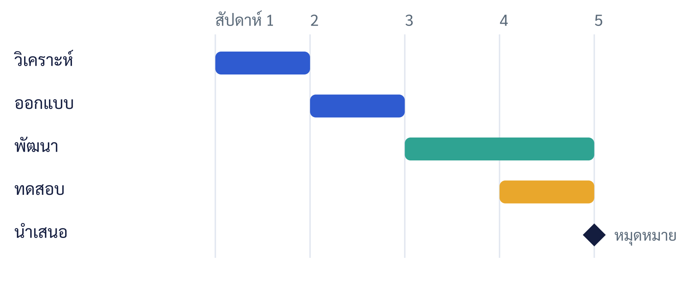

บทที่ 8 เครื่องมือและโปรแกรมบริหารโครงการ
เมื่อศึกษาบทนี้จบแล้ว นิสิตสามารถ
- อธิบายประเภทและบทบาทของเครื่องมือบริหารโครงการได้
- จัดทำตารางงาน หมุดหมาย และแผนภูมิแกนต์สำหรับติดตามงานได้
- ใช้เครื่องมือจัดสรรทรัพยากรและต้นทุน และอธิบายการปรับสมดุลทรัพยากรได้
- ใช้เส้นฐาน (Baseline) แดชบอร์ด และ PMIS ในการติดตามความก้าวหน้าได้
- ใช้เครื่องมือทำงานร่วมกัน จัดการเอกสารและองค์ความรู้ได้อย่างเป็นระบบ
- อธิบายประเด็นความปลอดภัยข้อมูล ความเป็นส่วนตัว และบทบาทของ AI ในการบริหารโครงการได้
- เลือกและนำเครื่องมือไปใช้ให้เกิดผลกับโครงงานธุรกิจสมัยใหม่ได้
8.1 บทนำ
เครื่องมือที่ดีไม่ได้ทำให้โครงการที่วางแผนแย่กลายเป็นดี แต่ช่วยให้โครงการที่วางแผนดีดำเนินไปได้อย่างมีประสิทธิภาพและมองเห็นได้ชัดเจน ในยุคดิจิทัล เครื่องมือบริหารโครงการได้กลายเป็นผู้ช่วยที่ขาดไม่ได้ของทีม
บทนี้กล่าวถึงเครื่องมือและโปรแกรมบริหารโครงการ ตั้งแต่การสร้างตารางงานและแผนภูมิแกนต์ การจัดสรรทรัพยากร การติดตามด้วยเส้นฐาน การทำงานร่วมกันแบบดิจิทัล การจัดการเอกสารและองค์ความรู้ ความปลอดภัยข้อมูล ไปจนถึงบทบาทของปัญญาประดิษฐ์ โดยเน้นหลักการเลือกและใช้เครื่องมือให้เหมาะกับงาน มากกว่าการยึดติดกับโปรแกรมใดโปรแกรมหนึ่ง (PMI, 2021)
8.2 ภาพรวมและประเภทของเครื่องมือบริหารโครงการ
เครื่องมือบริหารโครงการมีหลากหลายตั้งแต่แบบเรียบง่ายไปจนถึงระบบระดับองค์กร อาจจำแนกตามหน้าที่หลักได้ดังตารางที่ 8.1 (Larson & Gray, 2021)
ตารางที่ 8.1 ตัวอย่างประเภทเครื่องมือบริหารโครงการ
| ประเภท | หน้าที่หลัก | เหมาะกับ |
|---|---|---|
| ตารางคำนวณ (Spreadsheet) | ตารางงาน งบประมาณ อย่างยืดหยุ่น | โครงการเล็ก ทรัพยากรจำกัด |
| เครื่องมือจัดการงาน (Task Board) | กระดานงานแบบ Kanban มอบหมายและติดตาม | ทีมที่ทำงานแบบปรับตัว |
| โปรแกรมบริหารโครงการ (PM Software) | Gantt เส้นทางวิกฤต ทรัพยากร Baseline | โครงการที่มีลำดับงานซับซ้อน |
| เครื่องมือทำงานร่วมกัน (Collaboration) | สื่อสาร แชร์ไฟล์ ประชุมออนไลน์ | ทีมกระจายตัว |
สำหรับโครงงานของนิสิต เครื่องมือฟรีหรือรุ่นการศึกษาที่ใช้งานง่ายมักเพียงพอ สิ่งสำคัญคือทีมเลือกเครื่องมือที่ทุกคนเข้าถึงและใช้ร่วมกันได้จริง มากกว่าเครื่องมือที่มีฟีเจอร์มากแต่ซับซ้อนเกินความจำเป็น (Schwalbe, 2019)
8.3 การสร้างตารางงาน หมุดหมาย และแผนภูมิแกนต์
แผนภูมิแกนต์ (Gantt Chart) เป็นเครื่องมือแสดงงาน ระยะเวลา และลำดับในรูปแบบแท่งตามแกนเวลา ทำให้เห็นภาพรวมของแผนงานและความก้าวหน้าได้ทันที แต่ละแท่งแทนงานหนึ่งงาน ความยาวแทนระยะเวลา และตำแหน่งแทนช่วงเวลาที่ทำ ดังภาพที่ 8.1 (Kerzner, 2022)

ในการสร้างแผนภูมิแกนต์ ทีมนำงานจาก WBS (บทที่ 7) มากำหนดระยะเวลาและความสัมพันธ์ แล้วเครื่องมือจะแสดงเป็นแท่งพร้อมเส้นเชื่อมความสัมพันธ์ เครื่องมือสมัยใหม่ยังคำนวณเส้นทางวิกฤตและแสดงความก้าวหน้าของแต่ละงานให้อัตโนมัติ ช่วยลดภาระการคำนวณด้วยมือและลดข้อผิดพลาด
8.4 การจัดสรรทรัพยากรและต้นทุน
เครื่องมือบริหารโครงการช่วยกำหนดว่าใครรับผิดชอบงานใดและใช้ทรัพยากรเท่าใด เมื่อมอบหมายงานแล้ว เครื่องมือสามารถแสดงภาระงานของแต่ละคนในรูปแผนภูมิภาระงาน หากพบว่ามีผู้ที่ถูกมอบหมายงานเกินกำลังในช่วงเวลาเดียวกัน จะต้องทำการปรับสมดุลทรัพยากร (Resource Leveling) โดยเลื่อนงานที่ไม่วิกฤตหรือกระจายงานใหม่ เพื่อไม่ให้เกิดคอขวด นอกจากนี้ การผูกต้นทุนกับงานยังช่วยประมาณงบประมาณรวมและติดตามค่าใช้จ่ายจริงเทียบกับแผน (เชื่อมโยงกับบทที่ 9) (Kloppenborg et al., 2019)
8.5 การติดตามความก้าวหน้าด้วยเส้นฐาน (Baseline)
เส้นฐาน (Baseline) คือ แผนที่ได้รับอนุมัติซึ่งใช้เป็นเกณฑ์เปรียบเทียบกับผลจริง เมื่อบันทึกเส้นฐานของขอบเขต กำหนดการ และงบประมาณไว้แล้ว การติดตามความก้าวหน้าคือการเปรียบเทียบผลจริงกับเส้นฐานเพื่อหาความเบี่ยงเบน (variance) หากงานล่าช้าหรือต้นทุนเกิน ทีมสามารถวิเคราะห์สาเหตุและดำเนินการแก้ไขได้ทันเวลา การมีเส้นฐานที่ชัดเจนเป็นพื้นฐานของการควบคุมโครงการอย่างมีวินัยและการวิเคราะห์มูลค่าที่ได้รับ (Earned Value) ในบทที่ 9 (PMI, 2021)
8.5.1 แดชบอร์ดและการรายงานสถานะ
เครื่องมือสมัยใหม่มักมีแดชบอร์ด (Dashboard) ที่รวบรวมตัวชี้วัดสำคัญของโครงการไว้ในหน้าเดียว เช่น ความก้าวหน้าโดยรวม งานที่ล่าช้า งบประมาณที่ใช้ไป และความเสี่ยงที่เปิดอยู่ แดชบอร์ดช่วยให้ทีมและผู้มีส่วนได้ส่วนเสียเห็นสถานะได้ทันทีโดยไม่ต้องอ่านรายงานยาว การออกแบบรายงานสถานะที่ดีควรใช้หลัก "ไฟจราจร" (เขียว-เหลือง-แดง) เพื่อสื่อสถานะอย่างรวดเร็ว และเน้นข้อมูลที่ผู้รับต้องใช้ตัดสินใจ มากกว่าการรายงานทุกรายละเอียด (Kloppenborg et al., 2019)
8.5.2 ระบบสารสนเทศเพื่อการบริหารโครงการ (PMIS)
ในระดับองค์กร ระบบสารสนเทศเพื่อการบริหารโครงการ (Project Management Information System: PMIS) รวมข้อมูลของหลายโครงการไว้ในระบบเดียว ช่วยให้ผู้บริหารเห็นภาพรวมของพอร์ตโฟลิโอ จัดสรรทรัพยากรข้ามโครงการ และสะสมบทเรียนเพื่อใช้ในโครงการต่อไป แม้โครงงานของนิสิตจะไม่จำเป็นต้องใช้ระบบซับซ้อนเช่นนี้ แต่การเข้าใจแนวคิด PMIS ช่วยให้ผู้เรียนเห็นว่าเครื่องมือดิจิทัลสามารถขยายจากการบริหารโครงการเดี่ยวสู่การบริหารทั้งองค์กรได้อย่างไร (Schwalbe, 2019)
8.6 การทำงานร่วมกันแบบดิจิทัลและกระดาน Agile
เครื่องมือทำงานร่วมกันช่วยให้ทีมสื่อสาร แชร์เอกสาร และประชุมออนไลน์ได้อย่างราบรื่น โดยเฉพาะทีมที่ทำงานแบบกระจายตัว สำหรับทีมที่ใช้แนวทางแบบปรับตัว กระดานงานแบบ Kanban เป็นเครื่องมือยอดนิยม โดยแบ่งงานเป็นคอลัมน์ตามสถานะ เช่น "รอทำ" "กำลังทำ" "เสร็จแล้ว" ทำให้เห็นสถานะงานและคอขวดได้ทันที แนวคิดนี้สอดคล้องกับหลักการ Agile ที่เน้นความโปร่งใสและการปรับตัว (Beck et al., 2001) การจัดประชุมสั้นประจำวันหรือประจำสัปดาห์ควบคู่กับกระดานงานช่วยให้ทีมประสานงานและแก้ปัญหาได้เร็ว หลักสำคัญคือการจำกัดงานที่ทำพร้อมกัน (Work In Progress) เพื่อให้ทีมโฟกัสและงานไหลลื่นแทนที่จะค้างอยู่หลายงานพร้อมกัน
8.7 การจัดการเอกสารและองค์ความรู้
โครงการสร้างเอกสารจำนวนมาก ตั้งแต่ใบอนุมัติโครงการ แผนงาน รายงานความก้าวหน้า ไปจนถึงบทเรียน การจัดการเอกสารที่ดีช่วยให้ทีมค้นหาและใช้ข้อมูลได้สะดวก ป้องกันการทำงานจากเอกสารเวอร์ชันเก่า และรักษาความต่อเนื่องเมื่อมีการเปลี่ยนแปลงสมาชิก แนวปฏิบัติที่ดี ได้แก่ การจัดเก็บเอกสารไว้ในที่ส่วนกลางที่ทุกคนเข้าถึง การตั้งชื่อไฟล์และควบคุมเวอร์ชันอย่างเป็นระบบ และการกำหนดสิทธิ์การเข้าถึงที่เหมาะสม (Meredith et al., 2021)
ในมุมกว้างขึ้น การจัดการองค์ความรู้ (Knowledge Management) คือการเปลี่ยนประสบการณ์และบทเรียนของโครงการให้เป็นสินทรัพย์ที่องค์กรใช้ซ้ำได้ การบันทึกบทเรียน การจัดทำแม่แบบ และการแบ่งปันความรู้ระหว่างทีม ช่วยให้โครงการต่อไปทำงานได้ดีขึ้นโดยไม่ต้องเรียนรู้ด้วยความผิดพลาดเดิมซ้ำ ๆ สำหรับทีมโครงงาน การจัดเก็บเอกสารและบันทึกการตัดสินใจสำคัญไว้อย่างเป็นระบบช่วยทั้งการทำงานปัจจุบันและการจัดทำเล่มรายงานในบทที่ 12
8.8 ความปลอดภัยข้อมูลและความเป็นส่วนตัว
เมื่อโครงงานธุรกิจสมัยใหม่มักเกี่ยวข้องกับข้อมูลผู้ใช้และข้อมูลทางธุรกิจ ความปลอดภัยข้อมูลและความเป็นส่วนตัวจึงเป็นประเด็นที่ต้องใส่ใจ ทีมควรจัดเก็บข้อมูลสำคัญอย่างปลอดภัย จำกัดการเข้าถึงเฉพาะผู้ที่จำเป็น สำรองข้อมูลอย่างสม่ำเสมอ และระมัดระวังในการใช้เครื่องมือบนคลาวด์ที่อาจมีความเสี่ยงด้านความปลอดภัย (Schwalbe, 2019)
ในด้านความเป็นส่วนตัว การเก็บและใช้ข้อมูลส่วนบุคคลของผู้ใช้ต้องเป็นไปตามกฎหมายคุ้มครองข้อมูลส่วนบุคคลและหลักจริยธรรม เช่น การขอความยินยอม การเก็บเท่าที่จำเป็น และการแจ้งวัตถุประสงค์การใช้ ประเด็นนี้เชื่อมโยงกับแนวคิดจริยธรรมในบทที่ 1 และเป็นสิ่งที่ผู้เรียนควรออกแบบเข้าไปในโครงงานตั้งแต่ต้น ไม่ใช่คิดเพิ่มภายหลัง
8.9 ปัญญาประดิษฐ์และระบบอัตโนมัติในการบริหารโครงการ
ปัญญาประดิษฐ์ (AI) และระบบอัตโนมัติกำลังเปลี่ยนวิธีทำงานของทีมโครงการ AI ช่วยงานหลายอย่าง เช่น การช่วยร่างเอกสารและสรุปการประชุม การวิเคราะห์ข้อมูลเพื่อประมาณการที่แม่นยำขึ้น การแจ้งเตือนความเสี่ยงจากรูปแบบข้อมูล และการตอบคำถามพื้นฐานของทีม ระบบอัตโนมัติยังช่วยลดงานประจำ เช่น การอัปเดตสถานะและการส่งการแจ้งเตือน (PMI, 2021)
อย่างไรก็ตาม พึงระลึกว่า AI เป็น "ผู้ช่วย" ไม่ใช่ผู้ตัดสินใจแทน ผลลัพธ์ของ AI อาจมีข้อผิดพลาดหรืออคติ จึงต้องตรวจสอบด้วยวิจารณญาณเสมอ และต้องระวังเรื่องความเป็นส่วนตัวของข้อมูลที่ป้อนให้ AI การตัดสินใจเชิงคุณค่า การนำทีม และความรับผิดชอบทางจริยธรรมยังคงเป็นบทบาทของมนุษย์ ผู้เรียนควรฝึกใช้ AI อย่างมีวิจารณญาณ ควบคู่กับความเข้าใจหลักการพื้นฐานที่กล่าวตลอดเล่มนี้
8.10 เกณฑ์การเลือกและการนำเครื่องมือไปใช้ให้เกิดผล
การเลือกเครื่องมือควรพิจารณาความเหมาะสมกับงานมากกว่าความนิยม เกณฑ์สำคัญ ได้แก่ ความสอดคล้องกับขนาดและความซับซ้อนของโครงการ ความง่ายในการใช้และการเรียนรู้ ความสามารถทำงานร่วมกันของทีม ต้นทุน (โดยเฉพาะรุ่นฟรีหรือการศึกษา) การเข้าถึงบนอุปกรณ์ต่าง ๆ และความปลอดภัยของข้อมูล หลักคือ "ใช้เครื่องมือที่เรียบง่ายที่สุดที่เพียงพอต่องาน" (Larson & Gray, 2021)
สิ่งที่สำคัญไม่น้อยกว่าการเลือกคือ การทำให้ทีม "ใช้จริง" เครื่องมือที่ดีที่สุดจะไร้ค่าหากทีมไม่อัปเดตข้อมูลให้เป็นปัจจุบัน ปัจจัยที่ช่วยให้การนำเครื่องมือไปใช้เกิดผล ได้แก่ การเลือกเครื่องมือที่ใช้ง่าย การตกลงกติกาการใช้ร่วมกัน การทำให้การอัปเดตเป็นส่วนหนึ่งของงานประจำวัน และการที่หัวหน้าทีมเป็นแบบอย่างในการใช้ การนำเครื่องมือมาใช้จึงเป็นทั้งเรื่องเทคโนโลยีและเรื่องพฤติกรรมของทีม
8.11 การประยุกต์กับโครงงานธุรกิจสมัยใหม่
ทีมโครงงานควรเลือกชุดเครื่องมือที่เหมาะกับทีม เช่น ใช้กระดาน Kanban ฟรีสำหรับจัดการงานประจำวัน ใช้แผนภูมิแกนต์อย่างง่ายวางแผนภาพรวมตลอดภาคการศึกษาและกำหนดหมุดหมาย ใช้เครื่องมือทำงานร่วมกันสำหรับสื่อสารและแชร์ไฟล์ จัดเก็บเอกสารไว้ที่ส่วนกลางพร้อมควบคุมเวอร์ชัน และบันทึกเส้นฐานของแผนเพื่อติดตามความก้าวหน้า ทีมควรใส่ใจความปลอดภัยและความเป็นส่วนตัวของข้อมูลผู้ใช้ และอาจใช้ AI เป็นผู้ช่วยร่างเอกสารและสรุปประชุมอย่างมีวิจารณญาณ สิ่งสำคัญที่สุดคือทุกคนในทีมใช้เครื่องมือร่วมกันอย่างสม่ำเสมอ เพื่อให้ข้อมูลเป็นปัจจุบันและมองเห็นภาพงานตรงกัน
กรณีศึกษา "ทีมพัฒนาระบบร้านค้าออนไลน์สำหรับวิสาหกิจชุมชน": ทีมนิสิต 4 คนต้องบริหารงานหลายด้านตลอดภาคการศึกษาโดยมีเวลาจำกัด
ทีมเลือกใช้เครื่องมือแบบผสม โดยวางแผนภาพรวมด้วยแผนภูมิแกนต์อย่างง่าย กำหนดหมุดหมาย "ต้นแบบเสร็จ" และ "ทดสอบเสร็จ" บันทึกเป็นเส้นฐาน จากนั้นจัดการงานประจำวันด้วยกระดาน Kanban แบ่งเป็น "รอทำ กำลังทำ เสร็จแล้ว" จำกัดงานที่ทำพร้อมกัน และประชุมสั้นทุกสัปดาห์เพื่อทบทวนสถานะผ่านแดชบอร์ดอย่างง่าย
ทีมจัดเก็บเอกสารทั้งหมดไว้บนพื้นที่ส่วนกลางพร้อมตั้งชื่อไฟล์เป็นระบบและควบคุมเวอร์ชัน เมื่อพบว่าสมาชิกคนหนึ่งถูกมอบหมายงานเกินกำลังในสัปดาห์ที่ 3 ทีมปรับสมดุลด้วยการเลื่อนงานที่ไม่วิกฤตและกระจายงานใหม่
เนื่องจากระบบเก็บข้อมูลลูกค้า ทีมใส่ใจความปลอดภัยด้วยการจำกัดสิทธิ์เข้าถึงและสำรองข้อมูล และใช้ AI ช่วยร่างเอกสารข้อเสนอและสรุปประชุม แล้วตรวจทานก่อนใช้จริง ผลคือทีมทำงานเป็นระบบ มองเห็นความก้าวหน้าตรงกัน และส่งมอบงานได้ตามแผน
เครื่องมือบริหารโครงการช่วยให้แผนที่ดีดำเนินไปอย่างมีประสิทธิภาพและมองเห็นได้ชัดเจน เครื่องมือมีหลายประเภทตั้งแต่ตารางคำนวณ กระดานงาน โปรแกรมบริหารโครงการ ไปจนถึงเครื่องมือทำงานร่วมกัน แผนภูมิแกนต์แสดงงาน ระยะเวลา และหมุดหมาย การจัดสรรทรัพยากรและการปรับสมดุลช่วยป้องกันคอขวด เส้นฐาน แดชบอร์ด และ PMIS ช่วยติดตามความก้าวหน้า กระดาน Kanban สนับสนุนการทำงานแบบปรับตัว การจัดการเอกสารและองค์ความรู้ช่วยรักษาความต่อเนื่องและสะสมบทเรียน ความปลอดภัยข้อมูลและความเป็นส่วนตัวเป็นสิ่งที่ต้องออกแบบเข้าไปตั้งแต่ต้น ปัญญาประดิษฐ์เป็นผู้ช่วยที่ทรงพลังแต่ต้องใช้อย่างมีวิจารณญาณ และการเลือกเครื่องมือควรยึดหลักความเรียบง่ายที่เพียงพอ พร้อมทำให้ทีมใช้จริง ทั้งหมดนี้ช่วยให้ทีมโครงงานธุรกิจสมัยใหม่ทำงานได้อย่างเป็นระบบในเวลาที่จำกัด
คำถามทบทวน
- จำแนกประเภทของเครื่องมือบริหารโครงการ และระบุว่าแต่ละประเภทเหมาะกับงานแบบใด
- แผนภูมิแกนต์แสดงข้อมูลอะไรบ้าง และมีประโยชน์ต่อการวางแผนและติดตามงานอย่างไร
- นำ WBS ของโครงงานกลุ่มท่านมาสร้างแผนภูมิแกนต์อย่างง่ายพร้อมหมุดหมาย
- เส้นฐาน (Baseline) คืออะไร และแดชบอร์ดกับ PMIS ช่วยติดตามความก้าวหน้าอย่างไร
- กระดาน Kanban และการจำกัดงานที่ทำพร้อมกัน (WIP) ช่วยทีมอย่างไร
- เหตุใดการจัดการเอกสารและการควบคุมเวอร์ชันจึงสำคัญต่อทีมโครงงาน
- การจัดการองค์ความรู้ช่วยองค์กรและโครงการต่อไปอย่างไร
- ยกตัวอย่างแนวทางดูแลความปลอดภัยและความเป็นส่วนตัวของข้อมูลในโครงงานของท่าน
- AI ช่วยงานบริหารโครงการได้อย่างไรบ้าง และมีข้อพึงระวังอะไร
- ระบุเกณฑ์การเลือกเครื่องมือบริหารโครงการอย่างน้อย 4 ข้อ และปัจจัยที่ทำให้ทีมใช้จริง
- ออกแบบชุดเครื่องมือที่ทีมโครงงานของท่านจะใช้ พร้อมเหตุผล
- แผนภูมิแกนต์ (Gantt Chart)
- เครื่องมือแสดงงาน ระยะเวลา และลำดับในรูปแบบแท่งตามแกนเวลา
- การปรับสมดุลทรัพยากร (Resource Leveling)
- การปรับแผนเพื่อไม่ให้ทรัพยากรถูกใช้เกินกำลัง
- เส้นฐาน (Baseline)
- แผนที่ได้รับอนุมัติซึ่งใช้เป็นเกณฑ์เปรียบเทียบกับผลจริง
- แดชบอร์ด (Dashboard)
- หน้ารวมตัวชี้วัดสำคัญของโครงการเพื่อดูสถานะได้ทันที
- PMIS
- ระบบสารสนเทศที่รวมข้อมูลหลายโครงการเพื่อการบริหารระดับองค์กร
- กระดาน Kanban / WIP
- กระดานงานตามสถานะ และการจำกัดงานที่ทำพร้อมกัน
- การจัดการองค์ความรู้
- การเปลี่ยนบทเรียนของโครงการให้เป็นสินทรัพย์ที่ใช้ซ้ำได้
- ความเป็นส่วนตัวของข้อมูล
- การเก็บและใช้ข้อมูลส่วนบุคคลตามกฎหมายและจริยธรรม
เอกสารอ้างอิง
แหล่งอ่านเพิ่มเติม
วราวุฒิ นาคบุญนำ. (2569). บทที่ 8 เครื่องมือและโปรแกรมบริหารโครงการ. ใน การบริหารโครงการสำหรับโครงงานธุรกิจสมัยใหม่ (ตำรารายวิชา 0903468 โครงงานพิเศษธุรกิจสมัยใหม่). คณะการบัญชีและการจัดการ มหาวิทยาลัยมหาสารคาม. https://aj-warawut.github.io/academic-web-teaching/textbook_0903468_บทที่8_เผยแพร่.html